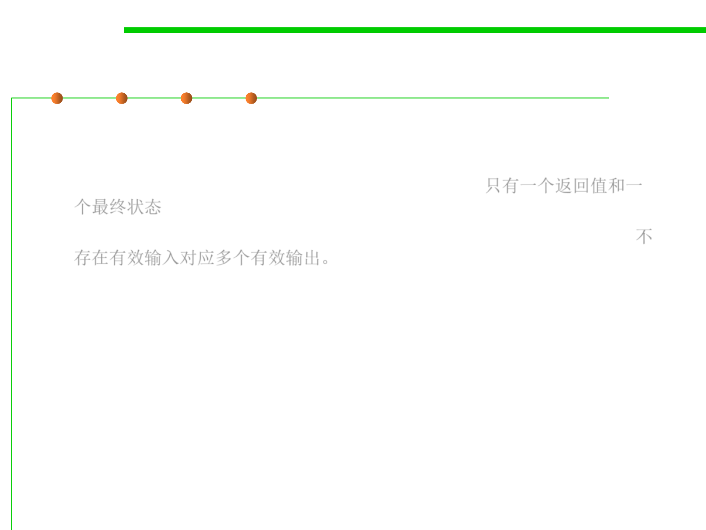

3.2 Designing Specification
Deterministic vs. underdetermined specs
▪ Deterministic : when presented with a state satisfying the
precondition, the outcome is completely determined.
– Only one return value and one final state is possible.只有一个返回值和一
个最终状态
– There are no valid inputs for which there is more than one valid output.不
存在有效输入对应多个有效输出。